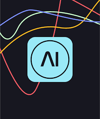
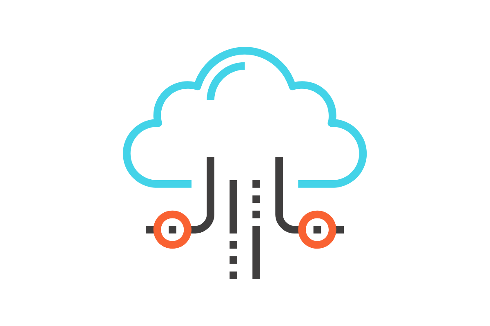
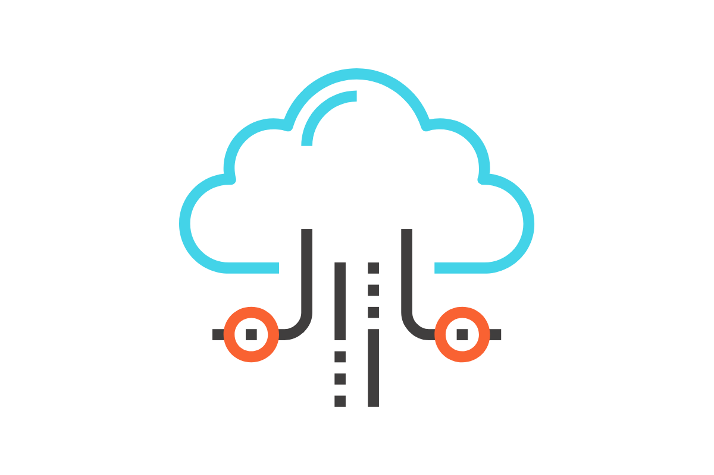
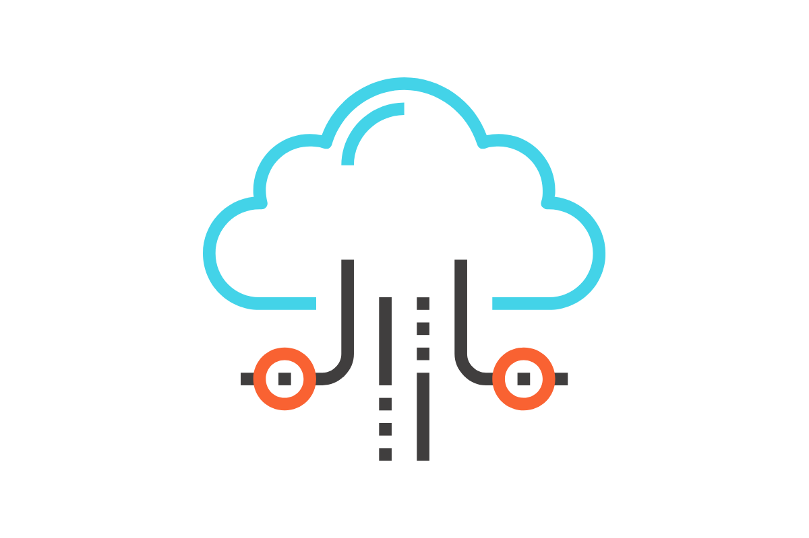

ШІ це система яка зазвичай працює на системах, серверах, комп'ютерах та інших цифрових пристроїв та яка оброблює інформацію.
ШІ базується на використанні алгоритмів та статистичних моделей, що дозволяє комп'ютерам "вчитися" на основі великої кількості даних. Одним з ключових методів в ШІ є машинне навчання, яке дозволяє системам адаптуватися до нової інформації та покращувати свої результати з часом.
Як працює ШІ: Спочатку ШІ отримує текст/інформацію або запит, обично його називають "промпт", ШІ читає цей промпт, аналізує його та шукає максимально точні данні з інтернету та доповнює їх, так працюють текстові ШІ, наприклад ChatGPT, Google Bard, Microsoft Copilot та інші

Як працюють хостинги
Хостинг - це послуга, яка надає користувачам можливість розміщувати свої веб-сайти та додатки на серверах, доступних через Інтернет. Це важлива складова для будь-якого веб-проекту, оскільки вона забезпечує доступність та стабільність вашого веб-сайту в Інтернеті.
Основні принципи роботи хостингу:
Споживачі вибирають план хостингу від провайдера, залежно від їхніх потреб та бюджету.
Файли та дані веб-сайту завантажуються на сервери хостингу.
Хостинг забезпечує необхідні ресурси та інфраструктуру для доступу до веб-сайту через Інтернет.
Користувачі можуть керувати та оновлювати свій веб-сайт через спеціалізовані інструменти адміністрування.

Як працюють запити
Запит - це HTTP-запит, який надсилається серверу від клієнта з метою отримання певної інформації чи виконання конкретної операції. Запити використовуються для взаємодії між клієнтом (браузером або іншим клієнтським застосунком) та веб-сервером.
Основні етапи роботи запитів:
Клієнт формує HTTP-запит, вказуючи метод (GET, POST, PUT, DELETE) та інші параметри.
Запит надсилається на веб-сервер, який обробляє його та відповідає з необхідною інформацією чи результатом операції.
Веб-сервер повертає відповідь клієнту, який обробляє отримані дані або відображає результат на сторінці.
Типи запитів:
GET: Використовується для отримання даних від сервера.
POST: Використовується для відправлення даних на сервер, наприклад, при відправці форм.
PUT: Використовується для оновлення існуючих даних на сервері.
DELETE: Використовується для видалення даних на сервері.
Перевірьте роботу ШІ, цей ШІ аналізує ваш малюнок та пише наскільки відсотків він замальований
Як він працює?: коли ви малюєте і перестаєте, данний ШІ аналізує ваш малюнок та рахує пікселі які ви намалювали і зрівнює їх з розміром дошки на якій ви малюєте, далі він робить математичний приклад та виводить його результат у відсотках.
Таперь ви краще ознайомились з ШІ, а чи ви хочете передати йому якесь повідомлення?
Якщо ваша відповідь - так то наш музей технологій допоможе вам з цим!
Ви пишете якесь повідомлення для ШІ, відправляєте його і за допомогою посту та Hold My Coffee ваше повідомлення передається до нашого контейнеру, який ми читаємо різним ШІ кожен місяць
Ви можете вибрати якому ШІ хочете передати повідомлення.
 
